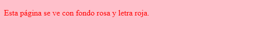

Descomprima las plantillas en la carpeta ejercicios. Se creará una carpeta primeras-paginas-plantillas.
Renombre la carpeta primeras-paginas-plantillas como primeras-paginas.
Las capturas de pantalla están tomadas con un ancho de ventana de 1024px aproximadamente.
Primeras páginas 1 A - Asociar hojas de estilo a páginas web (1)
Abra en Visual Studio Code la página pp-1-a-1.html.
Asocie la hoja de estilo pp-1-a-1.css a esta página web.
Abra la página pp-1-a-1.html en un navegador y compruebe que el contenido se ve como en la captura siguiente:

Abra en Visual Studio Code la página pp-1-a-2.html.
Asocie la hoja de estilo pp-1-a-2.css a esta página web.
Abra la página pp-1-a-2.html en un navegador y compruebe que el contenido se ve como en la captura siguiente:
Primeras páginas 1 B - Asociar hojas de estilo a páginas web (2)
Abra en Visual Studio Code la página pp-1-b-1.html.
Asocie la hoja de estilo pp-1-b.css a esta página web.
Abra la página pp-1-b-1.html en un navegador y compruebe que el contenido se ve como en la captura siguiente:
Abra en Visual Studio Code la página pp-1-b-2.html.
Asocie la hoja de estilo pp-1-b.css a esta página web.
Abra la página pp-1-b-2.html en un navegador y compruebe que el contenido se ve como en la captura siguiente:
Primeras páginas 1 C - Asociar hojas de estilo a páginas web (3)
Abra en Visual Studio Code la página pp-1-c-1.html.
Asocie la hoja de estilo pp-1-c-1.css a esta página web.
Abra la página pp-1-c-1.html en un navegador y compruebe que el contenido se ve como en la captura siguiente:
Abra en Visual Studio Code la página pp-1-c-2.html.
Asocie la hoja de estilo pp-1-c-2.css a esta página web.
Abra la página pp-1-c-2.html en un navegador y compruebe que el contenido se ve como en la captura siguiente:
Abra en Visual Studio Code la página pp-1-c-3.html.
Asocie la hoja de estilo pp-1-c-1.css a esta página web.
Abra la página pp-1-c-3.html en un navegador y compruebe que el contenido se ve como en la captura siguiente:
Primeras páginas 2 - Corregir errores en página web y hoja de estilo
Abra en Visual Studio Code la página pp-2.html.
Corrija los errores sintácticos de la página web y los indicados por VSCode.
Formatee la página web con el atajo Alt+Mayús+f (en Windows) o Ctrl+Mayús+i (en LLiureX).
Abra en Visual Studio Code la hoja de estilo pp-2.css.
Corrija los errores sintácticos de la hoja de estilo y los indicados por VSCode.
Formatee la hoja de estilo con CSScomb con el atajo Alt+Máy+c Alt+Máy+f (en Windows) o Ctrl+Mayús+c Ctrl+Mayús+i (en LliureX).
Abra la página pp-2.html en un navegador y compruebe que el contenido se ve como en la captura siguiente:
Primeras páginas 3 A - Crear página web
Abra en Visual Studio Code la página pp-3-a.html.
Añada las etiquetas de bloque o secciones necesarias en cada párrafo de manera que al abrir la página web en un navegador el contenido se vea como en la captura siguiente:
Formatee la página web con el atajo Alt+Mayús+f (en Windows) o Ctrl+Mayús+i (en LLiureX).
Primeras páginas 3 B - Crear hoja de estilo
Copie la página pp-3-a.html en la carpeta primeras-paginas-3-b cambiando su nombre a pp-3-b.html.
Abra en Visual Studio Code la página pp-3-b.html.
Abra en Visual Studio Code la hoja de estilo pp-3-b.css.
Enlace la hoja de estilo pp-3-b.css añadiendo la etiqueta <link>.
Añada las sentencias en la hoja de estilo de manera que al abrir la página web en un navegador el contenido se vea como en la captura siguiente:
Formatee la hoja de estilo con CSScomb con el atajo Alt+Máy+c Alt+Máy+f (en Windows) o Ctrl+Mayús+c Ctrl+Mayús+i (en LliureX).